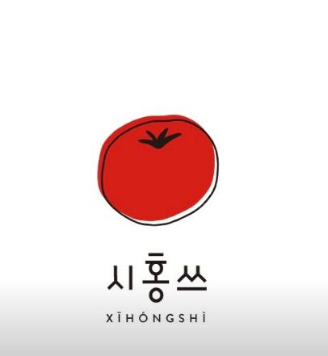
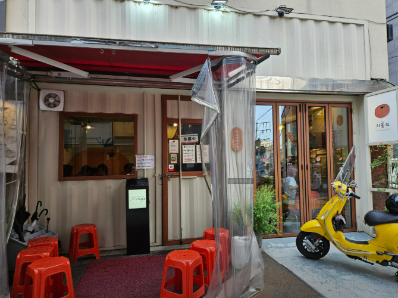
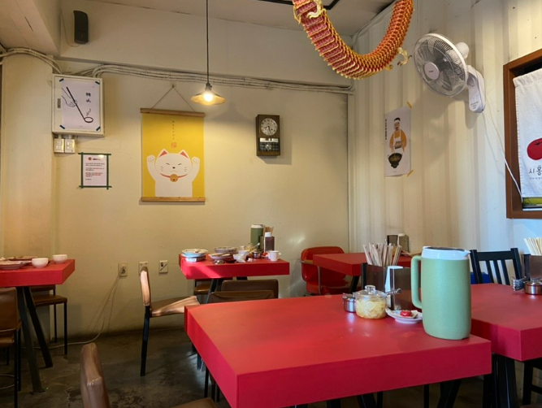
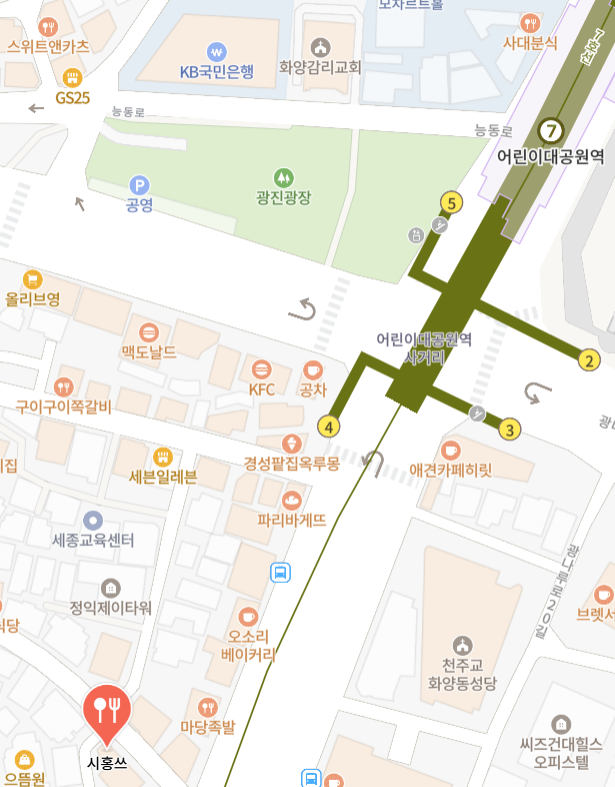
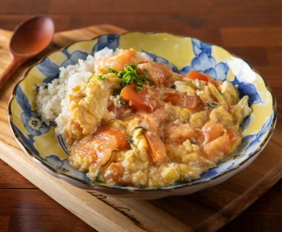
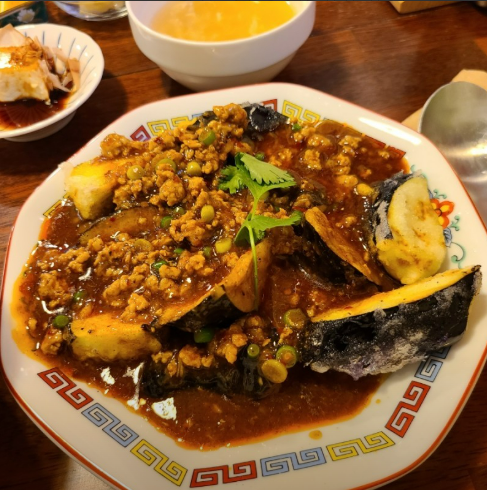
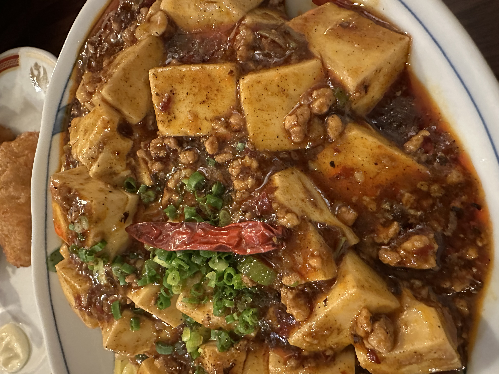
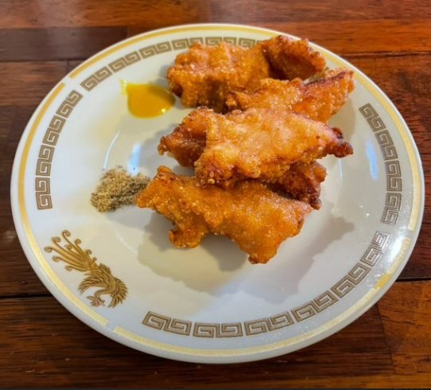

| 토마토계란덮밥 | 마파가지튀김 | 마파두부밥 | 고기튀김 | ||||
|---|---|---|---|---|---|---|---|
|

|
불맛🔥이 살아있는 토마토계란덮밥 제가 먹어봤던 토계밥 중 단연코 1위 당연함 여기서밖에 안 먹어봤으니까요 지인들 오면 1순위로 데려가는 식당의 1위 메뉴。 맛있습니다 |

|
저는 가지싫어인간이었어요 시홍쓰에서가지가얼마나맛있는음식인지알게되었습니다밥리필가능하니까리필해서드세요 |

|
두부가 부드럽고 맛있어요 마파가지튀김의 두부 버전입니다 |

|
맛있어요 |
| 맛 | 거리 | 청결 | 식곤증 | 재방문의사 | 한줄평 | |
|---|---|---|---|---|---|---|
| 팀원1 | 5 | 5 | 4.5 | 3.5 | 5 |
의심해서 미안! 토계밥 최고! 수료하기전까지 제일 많이 갈거 같아요 ㅋㅋ; |
| 팀원2 | 5 | 4 | 4 | 2 | 10 | 재방문 의사 200% |
| 팀원3 | 5 | 4 | 5 | 4 | 5 | 불향이 나고 과장해서 고기맛이 나는 토계밥 |